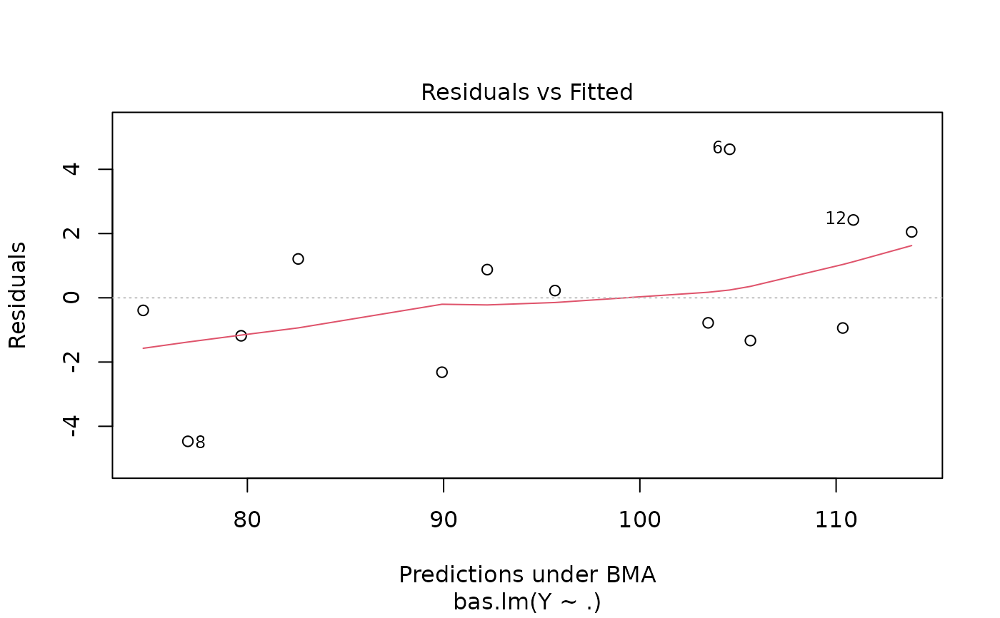
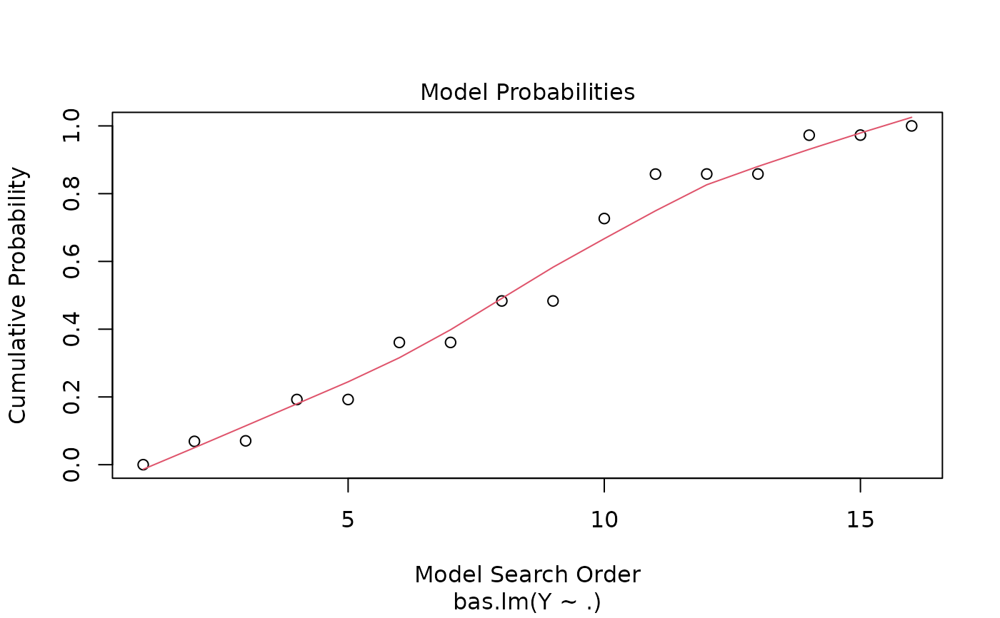
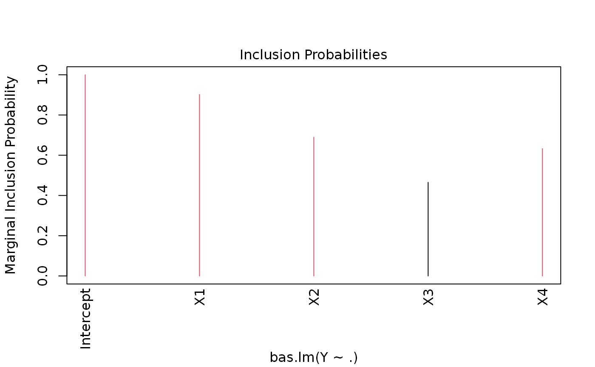

Four plots (selectable by 'which') are currently available: a plot of residuals against fitted values, Cumulative Model Probabilities, log marginal likelihoods versus model dimension, and marginal inclusion probabilities.
# S3 method for bas plot( x, which = c(1:4), caption = c("Residuals vs Fitted", "Model Probabilities", "Model Complexity", "Inclusion Probabilities"), panel = if (add.smooth) panel.smooth else points, sub.caption = NULL, main = "", ask = prod(par("mfcol")) < length(which) && dev.interactive(), col.in = 2, col.ex = 1, col.pch = 1, cex.lab = 1, ..., id.n = 3, labels.id = NULL, cex.id = 0.75, add.smooth = getOption("add.smooth"), label.pos = c(4, 2), subset = NULL, drop.always.included = FALSE )
| x |
|
|---|---|
| which | if a subset of the plots is required, specify a subset of the numbers '1:4' |
| caption | captions to appear above the plots |
| panel | panel function. The useful alternative to 'points', 'panel.smooth' can be chosen by 'add.smooth = TRUE' |
| sub.caption | common title-above figures if there are multiple; used as
'sub' (s.'title') otherwise. If 'NULL', as by default, a possible shortened
version of |
| main | title to each plot-in addition to the above 'caption' |
| ask | logical; if 'TRUE', the user is asked before each plot, see 'par(ask=.)' |
| col.in | color for the included variables |
| col.ex | color for the excluded variables |
| col.pch | color for points in panels 1-3 |
| cex.lab | graphics parameter to control size of variable names |
| ... | other parameters to be passed through to plotting functions |
| id.n | number of points to be labeled in each plot, starting with the most extreme |
| labels.id | vector of labels, from which the labels for extreme points will be chosen. 'NULL' uses observation numbers |
| cex.id | magnification of point labels. |
| add.smooth | logical indicating if a smoother should be added to most plots; see also 'panel' above |
| label.pos | positioning of labels, for the left half and right half of the graph respectively, for plots 1-4 |
| subset | indices of variables to include/exclude in plot of marginal posterior inclusion probabilities (NULL). |
| drop.always.included | logical variable to drop marginal posterior inclusion probabilities for variables that are always forced into the model. FALSE by default. |
This provides a panel of 4 plots: the first is a plot of the residuals versus fitted values under BMA. The second is a plot of the cumulative marginal likelihoods of models; if the model space cannot be enumerated then this provides some indication of whether the probabilities are leveling off. The third is a plot of log marginal likelihood versus model dimension and the fourth plot show the posterior marginal inclusion probabilities.
plot.coef.bas and image.bas.
Other bas plots:
image.bas(),
plot.coef.bas()
Merlise Clyde, based on plot.lm by John Maindonald and Martin Maechler
data(Hald) hald.gprior = bas.lm(Y~ ., data=Hald, prior="g-prior", alpha=13, modelprior=beta.binomial(1,1), initprobs="eplogp") plot(hald.gprior)   